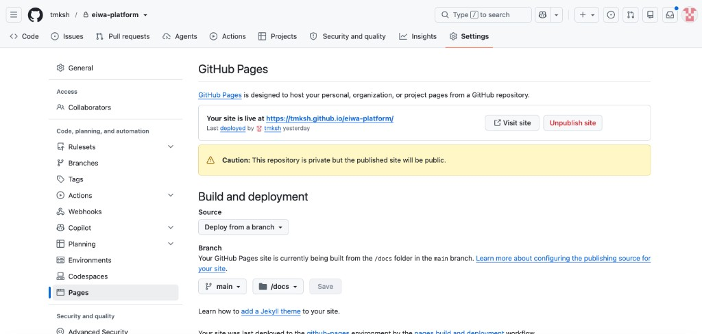
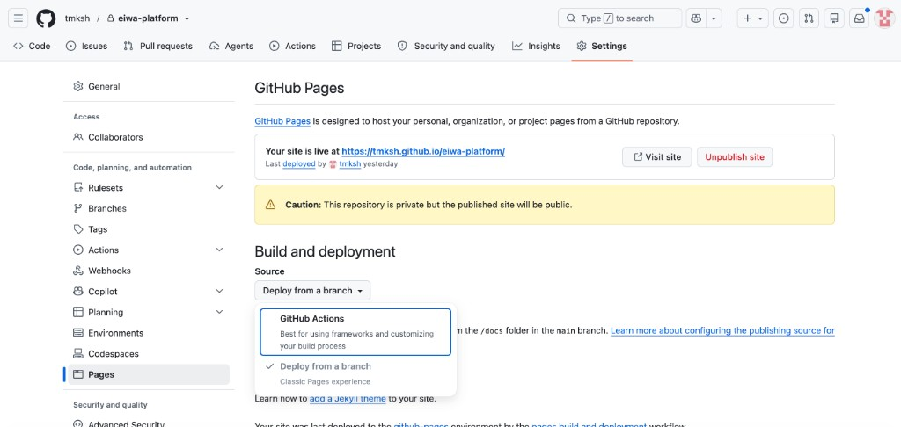

要件定義・設計
画面・データ・権限・連携・非機能（セキュリティ含む）を文書化します。社内稟議向けの整理もこの段階で行います。
入口：キックオフMTG
作り始める前に1回、60〜90分。費用を決める人、現場の人、案件オーナー、実装リード、お客様窓口が集まります。窓口を両側1名に決め、決まったことはその日のうちにメールで送ります。
ここで確定させるのは、あとで動くと全部やり直しになるものだけです。
- システムの目的とゴール
- 対象ユーザーの種別
- 管理画面の数、権限の数
- 機能のカテゴリ
- 外部連携の有無
契約前のキックオフは「作らない打ち合わせ」です。ここで目的と数（画面・権限）が決まると、03の見積が積めます。
文書化する5つ
01で聞いた「業務」を、この5つに分けて書き出します。分厚くしません。ふつうの案件なら5ページ前後で足ります。
画面
- 画面と帳票を1行ずつ並べる
- 誰が、どの順番で使うか
データ
- 何を持つか（項目の一覧）
- どこから移すか、移さないものは何か
権限
- 役割ごとに、見える / 直せる範囲
- 見えてはいけないものを先に決める
連携
- 他システムとつなぐか
- 未確認なら「いつ / 誰に聞く」を書く
非機能（セキュリティ含む）
- 同時に使う人数、データ量
- ログイン方法、個人情報の扱い、バックアップ
やらないこと
- やることと同じ細かさで書く
- 「将来は在庫も」は第2段階に送る
機能一覧の書き方
文書化した5つを、お客様が読める形にまとめたものが機能一覧です。過去の案件で実際に使ったものを、そのまま型として使います。
車両管理 機能一覧（画面別ガイド）
画面ごとに書く型。すでに動いているものを説明するときに使います。
- 最初に画面マップ（サイドバーの構成）を1枚置く
- 画面ごとにURL・ボタンの意味・押したあとどうなるかを書く
- 画面をまたいでつながる部分を別に書く
Sign-AI 機能一覧
機能ごとに書く型。提案や稟議で、範囲と段階を見せるときに使います。
- フェーズ1 / フェーズ2 に分け、件数と時期を頭に出す
- 機能ごとに、中身の箇条書き＋処理の流れ（STEP）
- 各機能に「→ 何が良くなるか」を1行つける
どちらも共通しているのは、機能名だけを並べていないことです。誰が使うか、押したらどうなるか、どの段階でやるかまで書きます。ここが埋まっていれば、そのまま見積の内訳（03）になります。
機能一覧はGitHub Pagesで公開する
要件定義と機能一覧は、ファイルを送らずWebページにします。URLを送るだけで、いつでも最新版が見られます。
- リポジトリの Settings を開き、左メニューの Pages を選ぶ。
- Build and deployment の Source を決める。公開に使うブランチとフォルダ（
mainの/docsなど）があるなら Deploy from a branch、無いなら GitHub Actions を選ぶ。 - Cursorでページを作って、コミット・プッシュする。デプロイが終わると反映される。
- Pages画面の上に出ている Your site is live at … のURLが公開先。これをお客様に送る。


リポジトリが private でも、公開したページは誰でも見られます。お客様の実名データ、ID、パスワード、社内金額は書きません。見せたくないものは、この工程の紙（社内用）に置いておきます。
完了定義を先に書く
「これができたら終わり」を、作る前に決めます。読んだ人が合格・不合格を判断できる書き方にします。
| これだと止まる | こう書く |
|---|---|
| 使いやすい画面にする | 配車の人が、翌日の割当を登録・変更・出力できる |
| 請求業務を効率化する | 月末の請求書100件を、担当1人が半日で出せる |
| データを移行する | 既存の顧客3,000件を移し、件数と主要項目が一致している |
稟議で使えるようにする
お客様が社内で通すための材料も、この工程で揃えます。
- 課題と効果、段階計画（第1段階 / 第2段階）
- スコープ外と前提条件
- お客様側の作業（名簿、ID、確認の期限）。書いていないと期限は当社だけが負うことになります。
- 検収条件（上の完了定義をそのまま使う）
次に進む合図
- やる / やらない が、お客様に共有されている
- 完了定義を読めば、別の人でも合格・不合格を判断できる
- お客様側の作業に、担当と期限が入っている
契約の前に、本番として使うものは作り始めません。確認のための試作はしてよいです。